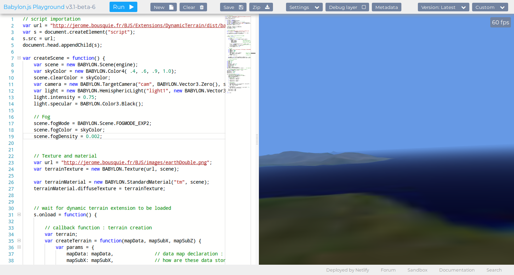
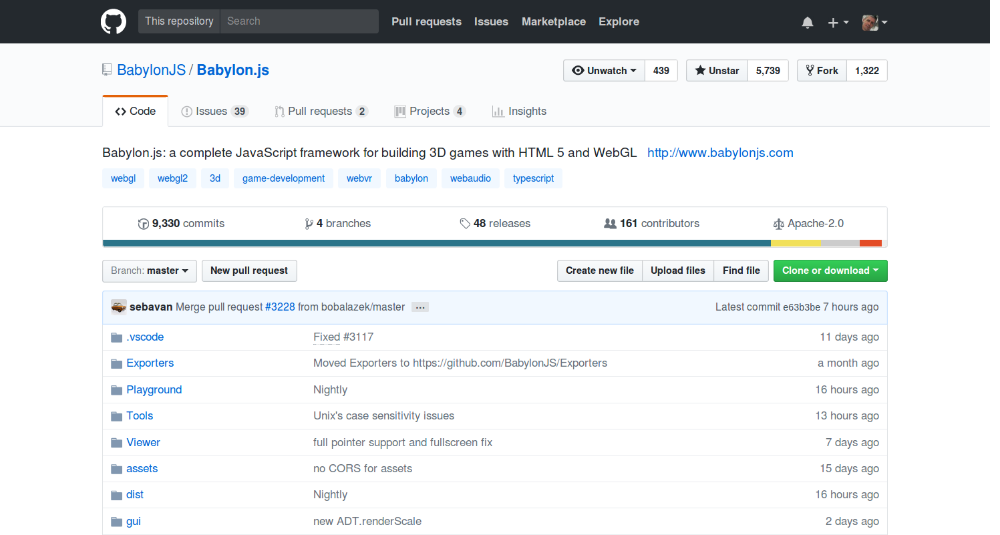

SGRL Champollion
BabylonJS
La 3D facile pour le Web
27 / 11 / 2017
teaser ...
Le Web, c'est bien
Une cible unique : le browser.
Présent par défaut sur toutes les plateformes.
Protocole http/https autorisé (presque) partout.
Pas d'installation locale, déploiement aisé.
Couches réseau et rendu déjà implémentées.
HTML5, c'est encore mieux
Standard W3C suivi et promu par tous les éditeurs
Véritable plateforme de développement via les API
- Stockage : cache, IndexedDB, Files
- Connectivité : WebSockets, WebRTC
- Périphériques : accès caméra, orientation, tactile
- Performances : compilation JIT, Web Workers
- Rendu : audio/video, SVG, canvas, WebGL, WebVR
HMTL5
<canvas></canvas>
var ctx = canvas.getContext('2d');
var ctx = canvas.getContext('webgl');
var ctx = canvas.getContext('webgl2');
Animer, c'est mieux !
window.requestAnimationFrame(callbackFunction);
60 fps (frames par seconde) = 16.6 ms
Un MESH
Le Mesh dans le World
Les transformations
Local Space →(translation, rotation, scaling)→World Space
World Space →(caméra : position et direction)→View Space
View Space →(type de projection)→Projection Space
Les calculs matriciels
Les transformations sont des matrices 4x4.
Projeté à l'écran (x', y', z') =
ProjectionMatrix * ViewMatrix * WorldMatrix * (x, y, z)
Soit plus de 128 opérations élémentaires juste pour calculer la matrice composée...
Rasterisation
Normales
Textures
WebGL à la rescousse
- Spécification HTML5 identique à OpenGL ES
- Langage compilé GLSL exécuté par le GPU
in vec3 position; in vec3 normal; in vec2 texCoord; out VertexData { vec2 texCoord; vec3 normal; } VertexOut; void main() { VertexOut.texCoord = texCoord; VertexOut.normal = normalize(normalMatrix * normal); gl_Position = projModelViewMatrix * vec4(position, 1.0); }
Oui, mais ...
- Le calcul matriciel, c'est pénible,
- la géométrie dans l'espace, c'est difficile,
- la programmation GLSL, c'est compliqué.
Pour abstraire cette complexité, un framework
BABYLON.js
Une scène
- Une caméra impérativement,
- une ou plusieurs sources lumineuses,
- des volumes (meshes),
- et parfois
- des particules,
- une interface utilisateur (GUI),
- des effets : ombres, SSAO, fog, PBR, DoF, etc.
Exemple de scène simple
Une scène
Ce sont aussi en général ...
- des interactions avec l'utilisateur,
- des animations,
- des contraintes physiques,
- des données contextuelles,
- une logique de la scène.
Interaction, animation, logique, physique
Le tout en simple Javascript
var engine = new BABYLON.Engine(canvas, true);
var scene = new BABYLON.Scene(engine);
var camera = new BABYLON.ArcRotateCamera("Camera", 0, 0.8, 100, BABYLON.Vector3.Zero(), scene);
var light = new BABYLON.PointLight("PointLight", camera.position, scene);
var mesh = BABYLON.MeshBuilder.CreateTorusKnot("m", {radialSegments: 80, tubularSegments: 24, tube: 0.6}, scene);
scene.registerBeforeRender(function() { /* votre logique ici */ });
engine.runRenderLoop(function(){ scene.render(); });
Des fonctionnalités plus riches ...
Exporters et formats
Exporters pour Blender, Unity, 3DS Max, Clara.io
Exporters pour les formats OBJ, FBX et STL
Importers pour les formats glTF, OBJ et STL
Support de drag'n'drop
La Documentation
La Communauté
http://www.html5gamedevs.com/forum/16-babylonjs/

Le Playground
Le Dépôt
Le support MS
Les livres
À suivre ...
slides de David Catuhe